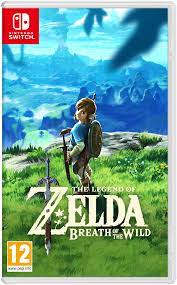
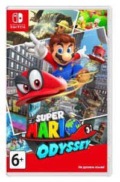
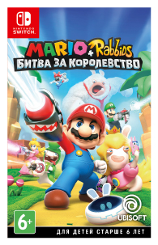

|  |
The Legend of Zelda: Breath of the WildВ общем и целом игра железно занимает место в моем топе и отдельное место в сердечке Если уж и ставить оценку, то субъективное скромное мое мнение 9 сердечек из 10 |
|  |
Super Mario OdysseyОценивая игру по моей шкале, поставлю 8 лун из 10, Все таки я не фанат платформеров, но игра определенно высокого уровня. |
|  |
Mario + Rabbids Kingdom BattleИгра не хватает звезд с неба, но достойная и добротная. С некоторым наслаждением даже ставлю хорошую оценку творению разработчиков из Юбисофт: 7 из 10 |